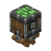

沿起重机杆滑行的取物器
参数
类型动态结构组件
工艺工作台合成
动力旋转输入
详细教程
怎么获得
木台阶、安山机壳与齿轮各一份，就能在工作台拼出一台起重机取物器。它自己不产动力，只有挂到起重机杆上才动得起来。
做大型吊臂之前先做一台试行程，杆子铺多长、取物器走到头停在哪，都要在地面上先看一遍，免得装到一半返工。
怎么用
把取物器挂上起重机杆，通入旋转它就沿杆滑行；杆的朝向定了轨道，旋转方向定了往哪头走。取物器黏住的方块会跟着整组一起搬家。
黏附用强力胶划选区，或者直接贴 stickers；移动前先空跑一趟，看看有没有方块被旁边的墙卡住。
进阶
给起重机杆通红石信号，取物器会停在原地，旋转改从输出杆传出去，正好拿来带一台钻头。断电之后它才继续沿杆走，做往返吊装就靠这个开关。
两台取物器可以挂同一根杆，用离合器分别控制，一台升降一台平移，吊臂的动作就分开了。
获取方式
官方教程 · 使用起重机取物器
- 起重机取物器可以被放置在起重机杆上，并且可以沿着起重机杆运动
- 起重机可以移动其黏附的方块